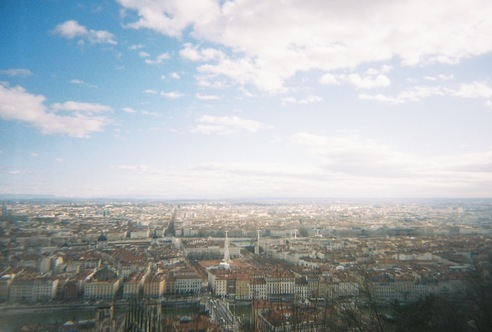

A one-day forum on multisymplectic geometry and related topics.
date: 10 January, 2024
time: 10:00–17:00
institute: Institut Camille Jordan, Université Claude-Bernard Lyon 1
room: Fokko de Cloux, Bâtiment Braconnier
organizers: Casey Blacker, Antonio Miti, Leonid Ryvkin
|
Francois Gieres (Université Claude-Bernard Lyon 1)
Covariant phase space and multisymplectic geometry We present the geometric formulation of explicitly time-dependent Hamiltonian systems in classical mechanics in order to motivate the consideration of multisymplectic geometry for obtaining a relativistically covariant canonical formulation of classical field theories. To conclude, the approach of (multi‑)symplectic geometry is briefly compared with the so-called covariant phase space approach. |
|
|
Maxime Wagner (Université de Lorraine)
The 6-sphere as a 2-plectic manifold Firstly, we look at the 2-plectic form on the six-sphere which is strongly linked to the exceptional Lie group G_2 and show that there exists no Darboux theorem for this structure. In a second part, we will be interested in the dynamics associated with this structure. |
|
Véronique Chloup and Phillippe Bonneau (Université de Lorraine)
An introduction to k-Poisson structures Knowing what is Poisson geometry as a more general framework for symplectic geometry, what can be k-Poisson geometry as a more general framework for k‑plectic geometry? We'll describe quickly but completely the answer given by H. Bursztyn et al. to this question. We'll generalise the question to Dirac/k-Dirac (Dirac geometry being a larger generalisation of Poisson geometry) as an easy-to-reach and more complete point of view, that includes pre-k-plectic geometry. Seeing first a k-Poisson (resp. k-Dirac) manifold as the infinitesimal object associated to a k-plectic groupoid (resp. pre-k-plectic groupoid) we'll then give equivalent and more easy-to-use definitions as structures on the manifold itself, without any more reference to a groupoid. Finally, we'll present results about foliations of these structures and illustrate all this with examples. Nothing in this talk will be original, all the material comes (mainly) from - Bursztyn, Cabrera, Iglesias : "Multisymplectic geometry and Lie groupoids" - Bursztyn, Martinez-Alba, Rubio : "On higher Dirac structures". |
|
|
Casey Blacker (George Mason University)
Introduction to bundle gerbes In this exposition, we approach bundle gerbes as smooth assignments of groupoids enriched in U(1)-torsors over a fixed manifold M. After first considering typical fibers, we present the general construction and proceed to define the Dixmier–Douady class, connective structures and surface holonomy. |
| Casey Blacker | George Mason University |
| Antonio Miti | Università Cattolica del Sacro Cuore |
| Leonid Ryvkin | Université Lyon 1 |
| Olga Kravchenko | Université Lyon 1 |
| Claude Roger | Université Lyon 1 |
| Francois Gieres | Université Claude-Bernard Lyon 1 |
| Sucheta Majumdar | ENS de Lyon |
| Marco Valerio d'Agostino | ENS de Lyon |
| Maxime Wagner | Université de Lorraine |
| Véronique Chloup | Université de Lorraine |
| Phillippe Bonneau | Université de Lorraine |